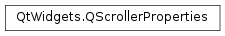

QScrollerProperties¶
Synopsis¶
Functions¶
- def
__eq__(sp) - def
__ne__(sp) - def
scrollMetric(metric) - def
setScrollMetric(metric, value)
Static functions¶
- def
setDefaultScrollerProperties(sp) - def
unsetDefaultScrollerProperties()
Detailed Description¶
The
PySide2.QtWidgets.QScrollerPropertiesclass stores the settings for aPySide2.QtWidgets.QScroller.The
PySide2.QtWidgets.QScrollerPropertiesclass stores the parameters used byPySide2.QtWidgets.QScroller.The default settings are platform dependent so that Qt emulates the platform behaviour for kinetic scrolling.
As a convention the
PySide2.QtWidgets.QScrollerPropertiesare in physical units (meter, seconds) and are converted byPySide2.QtWidgets.QScrollerusing the current DPI.See also
PySide2.QtWidgets.QScroller
-
class
PySide2.QtWidgets.QScrollerProperties¶ -
class
PySide2.QtWidgets.QScrollerProperties(sp) Parameters: sp – PySide2.QtWidgets.QScrollerPropertiesConstructs new scroller properties.
Constructs a copy of
sp.
-
PySide2.QtWidgets.QScrollerProperties.OvershootPolicy¶ This enum describes the various modes of overshooting.
Constant Description QScrollerProperties.OvershootWhenScrollable Overshooting is possible when the content is scrollable. This is the default. QScrollerProperties.OvershootAlwaysOff Overshooting is never enabled, even when the content is scrollable. QScrollerProperties.OvershootAlwaysOn Overshooting is always enabled, even when the content is not scrollable.
-
PySide2.QtWidgets.QScrollerProperties.FrameRates¶ This enum describes the available frame rates used while dragging or scrolling.
Constant Description QScrollerProperties.Fps60 60 frames per second QScrollerProperties.Fps30 30 frames per second QScrollerProperties.Fps20 20 frames per second QScrollerProperties.Standard the default value is 60 frames per second (which corresponds to PySide2.QtCore.QAbstractAnimation).
-
PySide2.QtWidgets.QScrollerProperties.ScrollMetric¶ This enum contains the different scroll metric types. When not indicated otherwise the
PySide2.QtWidgets.QScrollerProperties.setScrollMetric()function expects aPySide2.QtCore.QVariantof type qreal.See the
PySide2.QtWidgets.QScrollerdocumentation for further details of the concepts behind the different values.Constant Description QScrollerProperties.MousePressEventDelay This is the time a mouse press event is delayed when starting a flick gesture in [s]. If the gesture is triggered within that time, no mouse press or release is sent to the scrolled object. If it triggers after that delay the delayed mouse press plus a faked release event at global positionQPoint(-QWIDGETSIZE_MAX, -QWIDGETSIZE_MAX)is sent. If the gesture is canceled, then both the delayed mouse press plus the real release event are delivered.QScrollerProperties.DragStartDistance This is the minimum distance the touch or mouse point needs to be moved before the flick gesture is triggered in m.QScrollerProperties.DragVelocitySmoothingFactor A value that describes to which extent new drag velocities are included in the final scrolling velocity. This value should be in the range between 0and1. The lower the value, the more smoothing is applied to the dragging velocity.QScrollerProperties.AxisLockThreshold Restricts the movement to one axis if the movement is inside an angle around the axis. The threshold must be in the range 0to1.QScrollerProperties.ScrollingCurve The PySide2.QtCore.QEasingCurveused when decelerating the scrolling velocity after an user initiated flick. Please note that this is the easing curve for the positions, not the velocity: the default isQEasingCurve.OutQuad, which results in a linear decrease in velocity (1st derivative) and a constant deceleration (2nd derivative).QScrollerProperties.DecelerationFactor This factor influences how long it takes the scroller to decelerate to 0 velocity. The actual value depends on the chosen . For most types the value should be in the range from 0.1to2.0QScrollerProperties.MinimumVelocity The minimum velocity that is needed after ending the touch or releasing the mouse to start scrolling in m/s.QScrollerProperties.MaximumVelocity This is the maximum velocity that can be reached in m/s.QScrollerProperties.MaximumClickThroughVelocity This is the maximum allowed scroll speed for a click-through in m/s. This means that a click on a currently (slowly) scrolling object will not only stop the scrolling but the click event will also be delivered to the UI control. This is useful when using exponential-type scrolling curves.QScrollerProperties.AcceleratingFlickMaximumTime This is the maximum time in secondsthat a flick gesture can take to be recognized as an accelerating flick. If set to zero no such gesture is detected. An “accelerating flick” is a flick gesture executed on an already scrolling object. In such cases the scrolling speed is multiplied by in order to accelerate it.QScrollerProperties.AcceleratingFlickSpeedupFactor The current speed is multiplied by this number if an accelerating flick is detected. Should be >= 1.QScrollerProperties.SnapPositionRatio This is the distance that the user must drag the area beween two snap points in order to snap it to the next position. 0.33means that the scroll must only reach one third of the distance between two snap points to snap to the next one. The ratio must be between0and1.QScrollerProperties.SnapTime This is the time factor for the scrolling curve. A lower value means that the scrolling will take longer. The scrolling distance is independet of this value. QScrollerProperties.OvershootDragResistanceFactor This value is the factor between the mouse dragging and the actual scroll area movement (during overshoot). The factor must be between 0and1.QScrollerProperties.OvershootDragDistanceFactor This is the maximum distance for overshoot movements while dragging. The actual overshoot distance is calculated by multiplying this value with the viewport size of the scrolled object. The factor must be between 0and1.QScrollerProperties.OvershootScrollDistanceFactor This is the maximum distance for overshoot movements while scrolling. The actual overshoot distance is calculated by multiplying this value with the viewport size of the scrolled object. The factor must be between 0and1.QScrollerProperties.OvershootScrollTime This is the time in secondsthat is used to play the complete overshoot animation.QScrollerProperties.HorizontalOvershootPolicy This is the horizontal overshooting policy (see QScrollerProperties.OvershootPolicy).QScrollerProperties.VerticalOvershootPolicy This is the horizontal overshooting policy (see QScrollerProperties.OvershootPolicy).QScrollerProperties.FrameRate This is the frame rate which should be used while dragging or scrolling. PySide2.QtWidgets.QScrolleruses aPySide2.QtCore.QAbstractAnimationtimer internally to sync all scrolling operations to other animations that might be active at the same time. If the standard value of 60 frames per second is too fast, it can be lowered with this setting, while still being in-sync withPySide2.QtCore.QAbstractAnimation. Please note that only the values of theQScrollerProperties.FrameRatesenum are allowed here.QScrollerProperties.ScrollMetricCount This is always the last entry.
-
PySide2.QtWidgets.QScrollerProperties.__ne__(sp)¶ Parameters: sp – PySide2.QtWidgets.QScrollerPropertiesReturn type: PySide2.QtCore.boolReturns
trueif these scroller properties are different fromsp; otherwise returnsfalse.
-
PySide2.QtWidgets.QScrollerProperties.__eq__(sp)¶ Parameters: sp – PySide2.QtWidgets.QScrollerPropertiesReturn type: PySide2.QtCore.boolReturns
trueif these scroller properties are equal tosp; otherwise returnsfalse.
-
PySide2.QtWidgets.QScrollerProperties.scrollMetric(metric)¶ Parameters: metric – PySide2.QtWidgets.QScrollerProperties.ScrollMetricReturn type: object Query the
metricvalue of the scroller properties.See also
PySide2.QtWidgets.QScrollerProperties.setScrollMetric()QScrollerProperties.ScrollMetric
-
static
PySide2.QtWidgets.QScrollerProperties.setDefaultScrollerProperties(sp)¶ Parameters: sp – PySide2.QtWidgets.QScrollerPropertiesSets the scroller properties for all new
PySide2.QtWidgets.QScrollerPropertiesobjects tosp.Use this function to override the platform default properties returned by the default constructor. If you only want to change the scroller properties of a single scroller, use
QScroller.setScrollerProperties()Note
Calling this function will not change the content of already existing
PySide2.QtWidgets.QScrollerPropertiesobjects.
-
PySide2.QtWidgets.QScrollerProperties.setScrollMetric(metric, value)¶ Parameters: - metric –
PySide2.QtWidgets.QScrollerProperties.ScrollMetric - value – object
Set a specific value of the
metricScrollerMetric tovalue.See also
PySide2.QtWidgets.QScrollerProperties.scrollMetric()QScrollerProperties.ScrollMetric- metric –
-
static
PySide2.QtWidgets.QScrollerProperties.unsetDefaultScrollerProperties()¶ Sets the scroller properties returned by the default constructor back to the platform default properties.
© 2018 The Qt Company Ltd. Documentation contributions included herein are the copyrights of their respective owners. The documentation provided herein is licensed under the terms of the GNU Free Documentation License version 1.3 as published by the Free Software Foundation. Qt and respective logos are trademarks of The Qt Company Ltd. in Finland and/or other countries worldwide. All other trademarks are property of their respective owners.